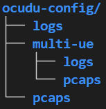
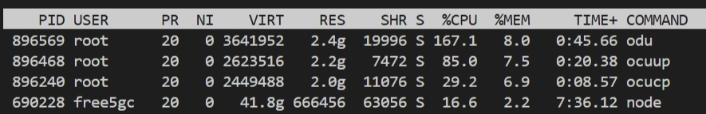

Integration free5GC and OCUDU With ZeroMQ
Note
Author: Fang-Kai Ting
Date: 2026/06/19
This guide describes how to connect OCUDU to free5GC and run a software UE with srsUE through ZeroMQ. It first covers a basic single-UE setup, then provides an advanced two-UE network slicing example with iperf3 traffic testing.
This article was written to make it easy to copy the configurations step-by-step and quickly verify the deployment between free5GC and OCUDU.
The focus here is not to explain every configuration parameter in detail, but to provide configuration files that can quickly bring up the setup. For parameter details, refer to the Configuration Reference — srsRAN Project documentation. Also note that the software simulation has a throughput limit of around 3 Mbits/sec. For better performance, refer to srsRAN gNB with srsUE — srsRAN Project documentation and use a physical RU.
Overview
The setup uses OCUDU as the 5G RAN, free5GC as the 5G Core, and srsUE as the UE. ZeroMQ is used as the software RF transport between the OCUDU DU and srsUE, so the test can run without SDR hardware.
This guide includes:
- Building OCUDU with ZeroMQ support.
- Building srsUE from
srsRAN_4G. - Starting free5GC, OCUDU CU-CP, OCUDU CU-UP, OCUDU DU, and srsUE.
- Registering one UE and testing data-plane connectivity.
- Running two UEs with different slice settings.
- Testing traffic behavior with
iperf3.
Components
- free5GC: Provides the 5G Core.
- OCUDU CU-CP: Handles RAN control-plane functions.
- OCUDU CU-UP: Handles RAN user-plane functions.
- OCUDU DU: Connects to srsUE through ZeroMQ.
- srsUE: Provides the software UE and creates the
tun_srsueinterface. - ZeroMQ: Provides the software RF transport between DU and UE.
- Appendix config: Provides the configuration files used in this guide.
Prerequisites
This guide was tested in the environment described below; however, the minimum RAM requirement and supported Ubuntu versions have not been tested.
- Ubuntu-based 22.04 or newer VM or host.
- CPU: 4 or more
- RAM: 16GB or more
Install free5GC by following:
Set config
-
Create below in home directory

-
Move the configuration files in the appendix to the
~/ocudu-configdirectory, and the multi-ue configuration files to the~/ocudu-config/multi-uedirectory.
Build OCUDU
-
Install the required packages:
sudo apt install cmake make gcc g++ pkg-config libfftw3-dev libmbedtls-dev libsctp-dev libyaml-cpp-dev libgtest-dev libzmq3-dev -
Clone OCUDU:
git clone --branch release_26_04 --depth 1 https://gitlab.com/ocudu/ocudu.git -
Build OCUDU with ZeroMQ support:
cd ocudu mkdir build cd build cmake ../ -DENABLE_EXPORT=ON -DENABLE_ZEROMQ=ON make -j$(nproc) -
During CMake configuration, confirm that ZeroMQ is detected:
-- FINDING ZEROMQ. -- Checking for module 'ZeroMQ' -- Found libZEROMQ: /usr/local/include, /usr/local/lib/libzmq.so
If CMake uses stale build artifacts, clean the build directory and rerun the configuration step.
Build srsUE
-
Install the required packages:
sudo apt install build-essential cmake libfftw3-dev libmbedtls-dev libboost-program-options-dev libconfig++-dev libsctp-dev libzmq3-dev -
Clone
srsRAN_4G:git clone --branch release_25_10 --depth 1 https://github.com/srsran/srsRAN_4G -
Build srsUE:
cd srsRAN_4G mkdir build cd build cmake ../ -DENABLE_RF_PLUGINS=OFF make -j$(nproc)
Basic Scenario: Single UE Registration and Connectivity
This section starts free5GC, OCUDU, and one srsUE instance. After the UE registers, the data-plane connection is verified with a ping test through tun_srsue.

Start free5GC
Start the free5GC core:
~/free5gc$ ./run.sh
Start OCUDU
Start CU-CP:
sudo ~/ocudu/build/apps/cu_cp/ocucp -c ~/ocudu-config/cu_cp.yml
Start CU-UP:
sudo ~/ocudu/build/apps/cu_up/ocuup -c ~/ocudu-config/cu_up.yml
Start DU with the ZeroMQ configuration:
sudo ~/ocudu/build/apps/du/odu -c ~/ocudu-config/du_zmq.yml
When the processes start correctly, the CU and DU components should wait for the UE connection.
-
OCUDU startup result

Reduce CPU Usage in a VM
In VM environments, OCUDU may consume a large amount of CPU due to excessive VM context switching. Adding the following block to the CU-CP, CU-UP, and DU YAML files can significantly reduce CPU utilization:
expert_execution:
threads:
main_pool:
backoff_period: 1000
-
Before apply

-
After apply

Start srsUE
- Before starting srsUE, create the corresponding subscriber in the free5GC web console (the
ue.confhas already been modified to the default settings of the web console). Please refer to the official documentation Create Subscriber via webconsole - free5GC for steps on registering the UE. -
Create ue1 namespace:
sudo ip netns add ue1 -
Start srsUE:
sudo ~/srsRAN_4G/build/srsue/src/srsue ~/ocudu-config/ue.conf
After the UE registers, srsUE creates the tun_srsue interface.
-
UE registration result

Configure Routing and NAT
-
Update the default route inside the UE namespace:
sudo ip netns exec ue1 ip route del default via 10.60.0.1 dev tun_srsue sudo ip netns exec ue1 ip route add default dev tun_srsue -
Enable IP forwarding:
sudo sysctl -w net.ipv4.ip_forward=1 -
Add NAT for the UE subnet:
sudo iptables -t nat -A POSTROUTING -s 10.60.0.0/16 -o enp0s3 -j MASQUERADEThe CIDR(10.60.0.0/16) is the IP class we set at webconsole for UE SNSSAI.
-
Allow forwarding between
upfgtpand the external network interface:sudo iptables -A FORWARD -i upfgtp -o enp0s3 -j ACCEPT sudo iptables -A FORWARD -i enp0s3 -o upfgtp -m state --state RELATED,ESTABLISHED -j ACCEPT
Replace enp0s3 with the external network interface used by your environment.
Verify Connectivity
Run a ping test from the UE namespace:
sudo -n ip netns exec ue1 ping -c 4 -I tun_srsue 8.8.8.8
-
Ping result

Advanced Scenario: Two UEs with Network Slicing
This section runs two UE instances with different slice settings. Because we use iperf3 for traffic testing, we create two dummy interfaces to serve as the iperf3 servers.

The example uses:
- UE1:
imsi=208930000000001, eMBB slicenssai-sd=010203 - UE2:
imsi=208930000000002, URLLC slicenssai-sd=112233 - UE1 server endpoint:
192.168.100.1 - UE2 server endpoint:
192.168.100.2
Prerequisites
-
Install GNU Radio
sudo apt-get install gnuradio -
Install iperf3 with
--bind-devsupport - Make sure the subscriber profiles in the free5GC web console match the two UE configuration files. For steps on registering a dual-UE slice, please refer to the A Practical Guide to Network Slicing and Traffic Steering with free5GC and OAI-MEC - free5GC "Create a new network slice" section in the previous blog post.
Create Dummy Interfaces
Create a dummy interface for UE1:
sudo ip link add dummy-ue1 type dummy
sudo ip addr add 192.168.100.1/24 dev dummy-ue1
sudo ip link set dummy-ue1 up
Create a dummy interface for UE2:
sudo ip link add dummy-ue2 type dummy
sudo ip addr add 192.168.100.2/24 dev dummy-ue2
sudo ip link set dummy-ue2 up
Start free5GC
Start the core network:
~/free5gc$ ./run.sh
Start OCUDU with Multi-UE Configuration
Start CU-CP:
sudo ~/ocudu/build/apps/cu_cp/ocucp -c ~/ocudu-config/multi-ue/cu_cp.yml
Start CU-UP:
sudo ~/ocudu/build/apps/cu_up/ocuup -c ~/ocudu-config/multi-ue/cu_up.yml
Start DU:
sudo ~/ocudu/build/apps/du/odu -c ~/ocudu-config/multi-ue/du_zmq.yml
Start Two UEs
Start UE1:
sudo ip netns add ue1
sudo ~/srsRAN_4G/build/srsue/src/srsue ~/ocudu-config/multi-ue/ue.conf
Start UE2:
sudo ip netns add ue2
sudo ~/srsRAN_4G/build/srsue/src/srsue ~/ocudu-config/multi-ue/ue2.conf
Start GNU Breaker
-
Start the GNU breaker process from the same directory:
grcc -r ~/ocudu-config/multi-ue/multi_ue_scenario.grc
If both UEs register successfully, each UE should have its tunnel interface.
-
UE1 result

-
UE2 result

Start iperf3 Servers
Start the UE1 server:
iperf3 -s -B 192.168.100.1
Start the UE2 server:
iperf3 -s -B 192.168.100.2
Configure UE Routes
Add the default route for UE1:
sudo ip netns exec ue1 ip route add default dev tun_srsue
Add the default route for UE2:
sudo ip netns exec ue2 ip route add default dev tun_srsue
Run UE1 Traffic
Start a 60-second UDP flow from UE1:
sudo ip netns exec ue1 sudo -u free5gc iperf3 --bind-dev tun_srsue -c 192.168.100.1 -i 1 -t 60 -u -b 3M --get-server-output --logfile ~/ocudu-config/embb.log
Run UE2 Traffic
Start UE2 about 15 seconds after UE1:
sudo ip netns exec ue2 sudo -u free5gc iperf3 --bind-dev tun_srsue -c 192.168.100.2 -i 1 -t 30 -u -b 3M --get-server-output --logfile ~/ocudu-config/urllc.log
Expected behavior:
0s-15s: only the eMBB UE1 traffic is running, so UE1 can reach the software simulation limit of around 3 Mbps.15s-45s: the eMBB UE1 and URLLC UE2 traffic overlap. Because the URLLC flow has a higher priority, UE2 can keep the 3 Mbps throughput, while the eMBB UE1 traffic is compressed to only a small amount of remaining bandwidth. This behavior matches the15s-45sinterval in the results below.45s-60s: the URLLC UE2 traffic stops, leaving only the eMBB UE1 traffic. As a result, UE1 recovers and returns to around 3 Mbps.

Example UE1 result:
[ ID] Interval Transfer Bitrate Jitter Lost/Total Datagrams
[ 5] 0.00-1.00 sec 248 KBytes 2.03 Mbits/sec 2.004 ms 0/180 (0%)
[ 5] 1.00-2.00 sec 277 KBytes 2.27 Mbits/sec 1.362 ms 0/201 (0%)
[ 5] 14.00-15.00 sec 321 KBytes 2.63 Mbits/sec 1.833 ms 3/236 (1.3%)
[ 5] 15.00-16.00 sec 175 KBytes 1.44 Mbits/sec 29.659 ms 8/135 (5.9%)
[ 5] 16.00-17.00 sec 13.8 KBytes 113 Kbits/sec 55.679 ms 10/20 (50%)
[ 5] 30.00-31.00 sec 9.65 KBytes 79.1 Kbits/sec 122.631 ms 1/8 (12%)
[ 5] 44.00-45.00 sec 11.0 KBytes 90.3 Kbits/sec 106.456 ms 8/16 (50%)
[ 5] 49.00-50.00 sec 176 KBytes 1.44 Mbits/sec 2.212 ms 176/304 (58%)
[ 5] 56.00-57.00 sec 332 KBytes 2.72 Mbits/sec 1.562 ms 21/262 (8%)
Example UE2 result:
[ ID] Interval Transfer Bitrate Jitter Lost/Total Datagrams
[ 5] 0.00-1.00 sec 239 KBytes 1.95 Mbits/sec 2.031 ms 0/173 (0%)
[ 5] 1.00-2.00 sec 196 KBytes 1.60 Mbits/sec 9.493 ms 54/196 (28%)
[ 5] 15.00-16.00 sec 163 KBytes 1.34 Mbits/sec 11.741 ms 159/277 (57%)
[ 5] 29.00-30.00 sec 181 KBytes 1.48 Mbits/sec 11.185 ms 127/258 (49%)
[ 5] 0.00-30.66 sec 5.75 MBytes 1.57 Mbits/sec 15.185 ms 3686/7959 (46%)
Limitation
As noted earlier, this setup uses ZMQ software emulation instead of real radio hardware such as a USRP. The results should therefore be treated as a functional connectivity test between OCUDU and free5GC, rather than a performance benchmark.
Troubleshooting
If the UE cannot register:
- Confirm that the subscriber exists in the free5GC web console.
- Confirm that the UE SUPI, key, OPc, DNN, and S-NSSAI match the subscriber profile.
- Confirm that OCUDU was built with
-DENABLE_ZEROMQ=ON. - Check if the UE has entered the RRC connected state.
- Check the AMF log to identify at which stage the UE failed.
If the UE registers but cannot pass traffic:
- Check the route inside the UE namespace.
- Confirm that the default route points to
tun_srsue. - Confirm that host IP forwarding is enabled.
- Confirm that the NAT rule uses the correct UE subnet.
- Confirm that the forwarding rules use the correct external network interface.
If CPU usage is too high:
- Add the
expert_executionblock shown in the Basic Usage section to the OCUDU YAML files.
Appendix
Single UE scenario
-
cu_cp.yml
# Example config for a locally deployed CU-CP listening on the localhost interface for a CU-UP and DU connection cu_cp: request_pdu_session_timeout: 40 inactivity_timer: 7000 amf: addr: 127.0.0.18 # The address or hostname of the AMF. port: 38412 bind_addr: 127.0.0.1 # A local IP that the gNB binds to for traffic from the AMF. supported_tracking_areas: - tac: 1 plmn_list: - plmn: "20893" tai_slice_support_list: - sst: 1 sd: "010203" e1ap: bind_addr: 127.0.20.1 f1ap: bind_addr: 127.0.10.1 log: filename: ~/ocudu-config/logs/cu_cp.log all_level: warning pcap: ngap_enable: true ngap_filename: ~/ocudu-config/pcaps/cu_cp_ngap.pcap f1ap_enable: true f1ap_filename: ~/ocudu-config/pcaps/cu_cp_f1ap.pcap e1ap_enable: true e1ap_filename: ~/ocudu-config/pcaps/cu_cp_e1ap.pcap # Below work for VM env expert_execution: threads: main_pool: backoff_period: 1000 -
cu_up.yml
# Example config for a locally deployed CU-UP cu_up: e1ap: cu_cp_addr: 127.0.20.1 bind_addr: 127.0.20.2 ngu: socket: - bind_addr: 127.0.0.1 f1u: socket: - bind_addr: 127.0.10.1 log: filename: ~/ocudu-config/cu_up.log all_level: warning pcap: e1ap_enable: true e1ap_filename: ~/ocudu-config/pcaps/cu_up_e1ap.pcap f1u_enable: true f1u_filename: ~/ocudu-config/pcaps/cu_up_f1u.pcap n3_enable: true n3_filename: ~/ocudu-config/pcaps/cu_up_n3.pcap # Below work for VM env expert_execution: threads: main_pool: backoff_period: 1000 -
du_zmq.yml
# Example config for a DU with ZMQ radio. f1ap: cu_cp_addr: 127.0.10.1 bind_addr: 127.0.10.2 f1u: socket: - bind_addr: 127.0.10.2 ru_sdr: device_driver: zmq # The RF driver name. device_args: tx_port=tcp://127.0.0.1:2000,rx_port=tcp://127.0.0.1:2001,base_srate=23.04e6,verbose # Optionally pass arguments to the selected RF driver. srate: 23.04 # RF sample rate might need to be adjusted according to selected bandwidth. tx_gain: 75 # Transmit gain of the RF might need to adjusted to the given situation. rx_gain: 75 # Receive gain of the RF might need to adjusted to the given situation. cell_cfg: dl_arfcn: 368500 # ARFCN of the downlink carrier (center frequency). band: 3 # The NR band. channel_bandwidth_MHz: 20 # Bandwith in MHz. Number of PRBs will be automatically derived. common_scs: 15 # Subcarrier spacing in kHz used for data. plmn: "20893" # PLMN broadcasted by the gNB. tac: 1 # Tracking area code (needs to match the core configuration). pci: 1 pdcch: common: ss0_index: 0 # Set search space zero index to match srsUE capabilities coreset0_index: 12 # Set search CORESET Zero index to match srsUE capabilities dedicated: ss2_type: common # Search Space type, has to be set to common dci_format_0_1_and_1_1: false # Set correct DCI format (fallback) prach: prach_config_index: 1 # Sets PRACH config to match what is expected by srsUE pdsch: mcs_table: qam64 # Sets PDSCH MCS to 64 QAM pusch: mcs_table: qam64 # Sets PUSCH MCS to 64 QAM log: filename: ~/ocudu-config/logs/du.log all_level: warning pcap: mac_enable: true mac_filename: ~/ocudu-config/pcaps/du_mac.pcap f1ap_enable: true f1ap_filename: ~/ocudu-config/pcaps/du_f1ap.pcap f1u_enable: true f1u_filename: ~/ocudu-config/pcaps/du_f1u.pcap # Below work for VM env expert_execution: threads: main_pool: backoff_period: 1000 # Optional UINT (50). Main thread pool back-off period, in microseconds. -
ue.conf
##################################################################### # srsUE configuration file ##################################################################### [rf] # Using ZMQ device to connect to the gNB. # The ports and srate are configured to match your du_zmq.yml. freq_offset = 0 tx_gain = 50 rx_gain = 40 srate = 23.04e6 nof_antennas = 1 device_name = zmq device_args = tx_port=tcp://127.0.0.1:2001,rx_port=tcp://127.0.0.1:2000,base_srate=23.04e6 # According to your du_zmq.yml, the gNB is on band 3. # The dl_arfcn is 368500, which corresponds to band 3. [rat.eutra] dl_earfcn = 2850 nof_carriers = 0 [rat.nr] bands = 3 nof_carriers = 1 max_nof_prb = 106 nof_prb = 106 [rrc] release = 15 ue_category = 4 [usim] # USIM configuration from your free5gc-ue.yaml mode = soft algo = milenage imsi = 208930000000001 k = 8baf473f2f8fd09487cccbd7097c6862 opc = 8e27b6af0e692e750f32667a3b14605d imei = 356938035643803 [nas] # APN from your free5gc-ue.yaml apn = internet apn_protocol = ipv4 [slicing] # Slicing configuration from your free5gc-ue.yaml enable = true nssai-sst = 1 nssai-sd = 66051 [gw] netns = ue1 ip_devname = tun_srsue ip_netmask = 255.255.255.0 [gui] enable = false [log] all_level = warning filename = ~/ocudu-config/logs/ue.log phy_lib_level = none all_hex_limit = 32 [pcap] enable = nas nas_filename = ~/ocudu-config/pcaps/ue_nas.pcap
Dual UE scenario
-
cu_cp.yml
# Example config for a locally deployed CU-CP listening on the localhost interface for a CU-UP and DU connection cu_cp: request_pdu_session_timeout: 20 inactivity_timer: 7200 amf: addr: 127.0.0.18 # The address or hostname of the AMF. port: 38412 bind_addr: 127.0.0.1 # A local IP that the gNB binds to for traffic from the AMF. supported_tracking_areas: - tac: 1 plmn_list: - plmn: "20893" tai_slice_support_list: - sst: 1 sd: "010203" - sst: 1 sd: "112233" e1ap: bind_addr: 127.0.20.1 f1ap: bind_addr: 127.0.10.1 log: filename: ~/ocudu-config/multi-ue/logs/cu_cp.log all_level: warning pcap: ngap_enable: true ngap_filename: ~/ocudu-config/multi-ue/pcaps/cu_cp_ngap.pcap f1ap_enable: true f1ap_filename: ~/ocudu-config/multi-ue/pcaps/cu_cp_f1ap.pcap e1ap_enable: true e1ap_filename: ~/ocudu-config/multi-ue/pcaps/cu_cp_e1ap.pcap -
cu_up.yml
# Example config for a locally deployed CU-UP cu_up: e1ap: cu_cp_addr: 127.0.20.1 bind_addr: 127.0.20.2 ngu: socket: - bind_addr: 127.0.0.1 f1u: socket: - bind_addr: 127.0.10.1 log: filename: ~/ocudu-config/multi-ue/logs/cu_up.log all_level: warning pcap: e1ap_enable: true e1ap_filename: ~/ocudu-config/multi-ue/pcaps/cu_up_e1ap.pcap f1u_enable: true f1u_filename: ~/ocudu-config/multi-ue/pcaps/cu_up_f1u.pcap n3_enable: true n3_filename: ~/ocudu-config/multi-ue/pcaps/cu_up_n3.pcap -
du_zmq.yml
# Example config for a DU with ZMQ radio. f1ap: cu_cp_addr: 127.0.10.1 bind_addr: 127.0.10.2 f1u: socket: - bind_addr: 127.0.10.2 ru_sdr: device_driver: zmq # The RF driver name. device_args: tx_port=tcp://127.0.0.1:2000,rx_port=tcp://127.0.0.1:2001,base_srate=11.52e6,verbose # Optionally pass arguments to the selected RF driver. srate: 11.52 # RF sample rate might need to be adjusted according to selected bandwidth. tx_gain: 75 # Transmit gain of the RF might need to adjusted to the given situation. rx_gain: 75 # Receive gain of the RF might need to adjusted to the given situation. cell_cfg: dl_arfcn: 368500 # ARFCN of the downlink carrier (center frequency). band: 3 # The NR band. channel_bandwidth_MHz: 10 # Bandwith in MHz. Number of PRBs will be automatically derived. common_scs: 15 # Subcarrier spacing in kHz used for data. plmn: "20893" # PLMN broadcasted by the gNB. tac: 1 # Tracking area code (needs to match the core configuration). pci: 1 scheduler: policy: qos_sched: # Higher fairness = more consistent scheduling = lower jitter # Value 5.0 balances throughput vs fairness for mixed traffic pf_fairness_coeff: 2.0 prio_enabled: true pdb_enabled: true gbr_enabled: true pdcch: common: ss0_index: 0 # Set search space zero index to match srsUE capabilities coreset0_index: 6 # Set search CORESET Zero index to match srsUE capabilities dedicated: ss2_type: common # Use common search space for lower latency dci_format_0_1_and_1_1: false # Use fallback DCI (0_0/1_0) for faster scheduling prach: prach_config_index: 1 # Sets PRACH config to match what is expected by srsUE total_nof_ra_preambles: 64 # Sets number of available PRACH preambles nof_cb_preambles_per_ssb: 64 # Sets the number of contention based preambles per SSB. pdsch: mcs_table: qam64 # Sets PDSCH MCS to 64 QAM pusch: mcs_table: qam64 # Sets PUSCH MCS to 64 QAM slicing: - # Slice 1: eMBB (needs guaranteed resources) sst: 1 sd: 66051 # 0x010203 in decimal sched_cfg: # Set min=0 to allow full utilization when alone min_prb_policy_ratio: 0 # Allow eMBB to use 50% max to leave headroom for URLLC max_prb_policy_ratio: 50 # LOWER priority value (0-255 scale, higher number = higher priority) priority: 10 - # Slice 2: URLLC (low latency priority) sst: 1 sd: 1122867 # 0x112233 in decimal sched_cfg: # No minimum - takes what it needs when active min_prb_policy_ratio: 0 # Can burst up to 100% for low latency max_prb_policy_ratio: 100 # HIGHER priority value = scheduled first (0-255 scale) priority: 200 log: filename: ~/ocudu-config/multi-ue/logs/du_zmq.log all_level: warning pcap: mac_enable: true mac_filename: ~/ocudu-config/multi-ue/pcaps/du_mac.pcap f1ap_enable: true f1ap_filename: ~/ocudu-config/multi-ue/pcaps/du_f1ap.pcap f1u_enable: true f1u_filename: ~/ocudu-config/multi-ue/pcaps/du_f1u.pcap -
multi_ue_scenario.grc
options: parameters: author: '' catch_exceptions: 'True' category: '[GRC Hier Blocks]' cmake_opt: '' comment: '' copyright: '' description: '' gen_cmake: 'On' gen_linking: dynamic generate_options: no_gui hier_block_src_path: '.:' id: multi_ue_scenario max_nouts: '0' output_language: python placement: (0,0) qt_qss_theme: '' realtime_scheduling: '' run: 'True' run_command: '{python} -u {filename}' run_options: run sizing_mode: fixed thread_safe_setters: '' title: srsRAN_multi_UE_2Users window_size: (1000,1000) states: bus_sink: false bus_source: false bus_structure: null coordinate: [8, 8] rotation: 0 state: enabled blocks: - name: samp_rate id: variable parameters: comment: '' value: '11520000' states: bus_sink: false bus_source: false bus_structure: null coordinate: [184, 12] rotation: 0 state: enabled - name: slow_down_ratio id: variable parameters: comment: '' value: '1' states: bus_sink: false bus_source: false bus_structure: null coordinate: [1064, 468.0] rotation: 0 state: true - name: ue1_path_loss_db id: variable parameters: comment: '' value: '0' states: bus_sink: false bus_source: false bus_structure: null coordinate: [1088, 20.0] rotation: 0 state: true - name: ue2_path_loss_db id: variable parameters: comment: '' value: '0' states: bus_sink: false bus_source: false bus_structure: null coordinate: [1088, 172.0] rotation: 0 state: true - name: zmq_hwm id: variable parameters: comment: '' value: '-1' states: bus_sink: false bus_source: false bus_structure: null coordinate: [432, 12.0] rotation: 0 state: enabled - name: zmq_timeout id: variable parameters: comment: '' value: '100' states: bus_sink: false bus_source: false bus_structure: null coordinate: [304, 12.0] rotation: 0 state: enabled - name: blocks_add_xx_0 id: blocks_add_xx parameters: affinity: '' alias: '' comment: '' maxoutbuf: '0' minoutbuf: '0' num_inputs: '2' type: complex vlen: '1' states: bus_sink: false bus_source: false bus_structure: null coordinate: [648, 408.0] rotation: 0 state: true - name: blocks_multiply_const_vxx_0 id: blocks_multiply_const_vxx parameters: affinity: '' alias: '' comment: '' const: 10**(-1.0*ue1_path_loss_db/20.0) maxoutbuf: '0' minoutbuf: '0' type: complex vlen: '1' states: bus_sink: false bus_source: false bus_structure: null coordinate: [384, 348.0] rotation: 0 state: true - name: blocks_multiply_const_vxx_0_0 id: blocks_multiply_const_vxx parameters: affinity: '' alias: '' comment: '' const: 10**(-1.0*ue2_path_loss_db/20.0) maxoutbuf: '0' minoutbuf: '0' type: complex vlen: '1' states: bus_sink: false bus_source: false bus_structure: null coordinate: [384, 436.0] rotation: 0 state: true - name: blocks_multiply_const_vxx_0_1 id: blocks_multiply_const_vxx parameters: affinity: '' alias: '' comment: '' const: 10**(-1.0*ue1_path_loss_db/20.0) maxoutbuf: '0' minoutbuf: '0' type: complex vlen: '1' states: bus_sink: false bus_source: false bus_structure: null coordinate: [664, 76.0] rotation: 0 state: true - name: blocks_multiply_const_vxx_0_1_1 id: blocks_multiply_const_vxx parameters: affinity: '' alias: '' comment: '' const: 10**(-1.0*ue2_path_loss_db/20.0) maxoutbuf: '0' minoutbuf: '0' type: complex vlen: '1' states: bus_sink: false bus_source: false bus_structure: null coordinate: [664, 172.0] rotation: 0 state: true - name: blocks_throttle_0 id: blocks_throttle parameters: affinity: '' alias: '' comment: '' ignoretag: 'True' maxoutbuf: '0' minoutbuf: '0' samples_per_second: 1.0*samp_rate/(1.0*slow_down_ratio) type: complex vlen: '1' states: bus_sink: false bus_source: false bus_structure: null coordinate: [392, 172.0] rotation: 0 state: true - name: zeromq_rep_sink_0 id: zeromq_rep_sink parameters: address: tcp://127.0.0.1:2100 affinity: '' alias: '' comment: '' hwm: zmq_hwm pass_tags: 'False' timeout: zmq_timeout type: complex vlen: '1' states: bus_sink: false bus_source: false bus_structure: null coordinate: [856, 60.0] rotation: 0 state: true - name: zeromq_rep_sink_0_0 id: zeromq_rep_sink parameters: address: tcp://127.0.0.1:2200 affinity: '' alias: '' comment: '' hwm: zmq_hwm pass_tags: 'False' timeout: zmq_timeout type: complex vlen: '1' states: bus_sink: false bus_source: false bus_structure: null coordinate: [856, 156.0] rotation: 0 state: true - name: zeromq_rep_sink_0_1 id: zeromq_rep_sink parameters: address: tcp://127.0.0.1:2001 affinity: '' alias: '' comment: '' hwm: zmq_hwm pass_tags: 'False' timeout: zmq_timeout type: complex vlen: '1' states: bus_sink: false bus_source: false bus_structure: null coordinate: [856, 420.0] rotation: 0 state: true - name: zeromq_req_source_0 id: zeromq_req_source parameters: address: tcp://127.0.0.1:2000 affinity: '' alias: '' comment: '' hwm: zmq_hwm maxoutbuf: '0' minoutbuf: '0' pass_tags: 'False' timeout: zmq_timeout type: complex vlen: '1' states: bus_sink: false bus_source: false bus_structure: null coordinate: [128, 156.0] rotation: 0 state: true - name: zeromq_req_source_1 id: zeromq_req_source parameters: address: tcp://127.0.0.1:2101 affinity: '' alias: '' comment: '' hwm: zmq_hwm maxoutbuf: '0' minoutbuf: '0' pass_tags: 'False' timeout: zmq_timeout type: complex vlen: '1' states: bus_sink: false bus_source: false bus_structure: null coordinate: [128, 332.0] rotation: 0 state: true - name: zeromq_req_source_1_0 id: zeromq_req_source parameters: address: tcp://127.0.0.1:2201 affinity: '' alias: '' comment: '' hwm: zmq_hwm maxoutbuf: '0' minoutbuf: '0' pass_tags: 'False' timeout: zmq_timeout type: complex vlen: '1' states: bus_sink: false bus_source: false bus_structure: null coordinate: [128, 420.0] rotation: 0 state: true connections: - [blocks_add_xx_0, '0', zeromq_rep_sink_0_1, '0'] - [blocks_multiply_const_vxx_0, '0', blocks_add_xx_0, '0'] - [blocks_multiply_const_vxx_0_0, '0', blocks_add_xx_0, '1'] - [blocks_multiply_const_vxx_0_1, '0', zeromq_rep_sink_0, '0'] - [blocks_multiply_const_vxx_0_1_1, '0', zeromq_rep_sink_0_0, '0'] - [blocks_throttle_0, '0', blocks_multiply_const_vxx_0_1, '0'] - [blocks_throttle_0, '0', blocks_multiply_const_vxx_0_1_1, '0'] - [zeromq_req_source_0, '0', blocks_throttle_0, '0'] - [zeromq_req_source_1, '0', blocks_multiply_const_vxx_0, '0'] - [zeromq_req_source_1_0, '0', blocks_multiply_const_vxx_0_0, '0'] metadata: file_format: 1 -
ue.conf
##################################################################### # srsUE configuration file ##################################################################### [rf] # Using ZMQ device to connect to the gNB. # The ports and srate are configured to match your du_zmq.yml. freq_offset = 0 tx_gain = 50 rx_gain = 40 srate = 11.52e6 nof_antennas = 1 device_name = zmq device_args = tx_port=tcp://127.0.0.1:2101,rx_port=tcp://127.0.0.1:2100,base_srate=11.52e6 # According to your du_zmq.yml, the gNB is on band 3. # The dl_arfcn is 368500, which corresponds to band 3. [rat.eutra] dl_earfcn = 2850 nof_carriers = 0 [rat.nr] bands = 3 nof_carriers = 1 max_nof_prb = 52 nof_prb = 52 [rrc] release = 15 ue_category = 4 [usim] # USIM configuration from your free5gc-ue.yaml mode = soft algo = milenage imsi = 208930000000001 k = 8baf473f2f8fd09487cccbd7097c6862 opc = 8e27b6af0e692e750f32667a3b14605d imei = 356938035643803 [nas] # APN from your free5gc-ue.yaml apn = internet apn_protocol = ipv4 [slicing] # Slicing configuration from your free5gc-ue.yaml enable = true nssai-sst = 1 nssai-sd = 66051 [gw] netns = ue1 ip_devname = tun_srsue ip_netmask = 255.255.255.0 [gui] enable = false [log] all_level = warning filename = ~/ocudu-config/multi-ue/logs/ue.log phy_lib_level = none all_hex_limit = 32 [pcap] enable = nas nas_filename = ~/ocudu-config/multi-ue/pcaps/ue_nas.pcap -
ue2.conf
##################################################################### # srsUE configuration file ##################################################################### [rf] # Using ZMQ device to connect to the gNB. # The ports and srate are configured to match your du_zmq.yml. freq_offset = 0 tx_gain = 50 rx_gain = 40 srate = 11.52e6 nof_antennas = 1 device_name = zmq device_args = tx_port=tcp://127.0.0.1:2201,rx_port=tcp://127.0.0.1:2200,base_srate=11.52e6 # According to your du_zmq.yml, the gNB is on band 3. # The dl_arfcn is 368500, which corresponds to band 3. [rat.eutra] dl_earfcn = 2850 nof_carriers = 0 [rat.nr] bands = 3 nof_carriers = 1 max_nof_prb = 52 nof_prb = 52 [rrc] release = 15 ue_category = 4 [usim] # USIM configuration from your free5gc-ue.yaml mode = soft algo = milenage imsi = 208930000000002 k = 8baf473f2f8fd09487cccbd7097c6862 opc = 8e27b6af0e692e750f32667a3b14605d imei = 356938035643803 [nas] # APN from your free5gc-ue.yaml apn = internet apn_protocol = ipv4 [slicing] # Slicing configuration from your free5gc-ue.yaml enable = true nssai-sst = 1 nssai-sd = 1122867 [gw] netns = ue2 ip_devname = tun_srsue ip_netmask = 255.255.255.0 [gui] enable = false [log] all_level = warning filename = ~/ocudu-config/multi-ue/logs/ue2.log phy_lib_level = none all_hex_limit = 32 [pcap] enable = nas nas_filename = ~/ocudu-config/multi-ue/pcaps/ue2_nas.pcap
References
About me
Hi, I’m Fang-Kai Ting, currently conducting research on Network Slicing.
Connect with Me
GitHub: qawl987
LinkedIn: www.linkedin.com/in/方凱-丁-a26a7925a